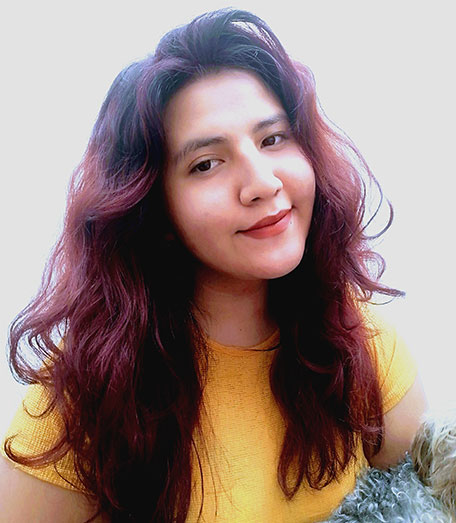

QUIÉN SOY
Mi nombre es Claudia Marlén Morán Carrillo, tengo 23 años y estudio Diseño gráfico en la Ciudad de Puebla. Soy una persona alegre, atenta y positiva, me gusta preocuparme por temas sociales como la adopción animal, enseñar a personas que requieran alguno de mis conocimientos, apoyar a las personas en temas personales y también aprender más cuestiones sobre mi carrera pero también de la vida cotidiana...
FORMACIÓN ACADÉMICA
Puedes ver mi curriculum en el siguiente link

Textimonios
Juan Carlos Oyarzabal
Conozco a Malen casi desde que empezamos la carrera y en todo el tiempo que eh convivido con ella puedo decir que es una persona muy amable, responsable y dedicada, tiene grandes virtudes como la paciencia y constancia que le ayudan a la hora de diseñar, creando grandes trabajos muy creativos e innovadores. Se ha logrado desarrollar en técnicas como la ilustración y la fotografía en los cuales ha entregado proyectos muy sorprendentes. Siempre busca aprender y mejorar para seguir entregando proyectos de calidad y no puedo esperar a ver lo que le depara el futuro, porque se que lograr crear increíbles y diversos proyectos.
Ángel Hernández
Marlen es una persona única, con gran pasión y dedicación por lo que hace, una persona que cumple con lo que se propone, que lucha día a día por salir adelante y vencer todo lo que la detenga. Su gran pasión y gusto por el diseño la ha hecho una gran artista, su manera de desarrollar sus obras, de hacer sus trabajos , de cumplir en tiempo y forma , de generar su propia identidad y explorar el potencial que puede ser, eso es marlen, Ademas de gran amiga , que está cuando se necesita y que siempre está para apoyar y ayudar a quien lo necesita
Mtro Luis Cristhian Sánchez Mendoza
Se ha desempeñado en la materia de animación de gráficos 2d y en la materia de modelado 3d, de manera adecuada, cumpliendo con los objetivos establecidos en cada proyecto y con el desarrollo de competencias establecidas en el currículo de cada materia. Demostrando siempre disposición, objetividad, creatividad y empeño en cada uno de sus trabajos. Participando activamente en el desarrollo de storyboards, guiones y rutinas de animación, demostró dominar tanto el software como las bases de una animación bidimensional. En el ámbito 3d, demostró tener habilidades en el modelado, mapeo, iluminación y configuraciones de renders fijos para diversos proyectos planteados.